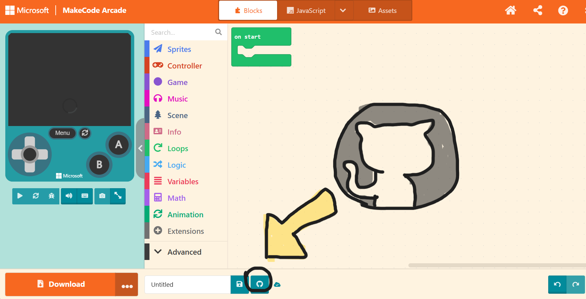

Go back to the main page
How to use MakeCode Arcade for Potluck!
MakeCode Arcade is super easy to use, and has tons of help available through free assets, tutorials, and the MakeCode Forums to ask questions!
This guide is intended so I can verify how long you spent coding in blocks. If I can't verify your hours, I can't give you prizes, so follow along!
Please follow all of the steps before you start coding!
The steps, which should only take a few minutes each:
- Step 1: Recording a timelapse while you're coding
- Step 2: Making a 'repository' to contain your code
- Step 3: Updating that repository so I know you made it yourself :-]
- Summary
Step 1: Record a timelapse while you're coding
The idea: Use 'Lapse' to record your screen while you're coding. This is so I can verify how long you spent coding, and give out prizes accordingly!
This step should only take about 5 minutes to set up, but just in case, here's a detailed step-by-step:
- Go to lapse.hackclub.com
- Click 'Sign in'
- If you already have a Hack Club account, click sign in with Hack Club or sign in with Slack
- If you are new to Hack Club, click 'Sign in with Hack Club'
- Then enter your email in the email field, and click continue; this will create a new account for you
- Enter any details it requires; for example, fill out your name, birthday, email and country
- It will then send you a code to your email-- enter that code from your email into the 'enter the 6-digit code' box
- It will then ask you to authorite 'hackatime' to use your account; click 'Okay!'
- You will be redirected to hackatime.hackclub.com! Ignore that website, go back to lapse.hackclub.com
- Click 'Sign in' on lapse.hackclub.com
- You will be asked whether or not to authorize lapse-- click 'Authorize'
- You're ready to start recording now!
- When you start coding, open Makecode Arcade in one tab and lapse in another
- Go to the lapse tab and click 'create', then click to choose to share your 'browser', then click to 'start recording'
- A popup will appear asking which tab of your browser to share. Click the 'arcade.makecode.com' or 'MakeCode Arcade' tab, then click 'Share'
- Now, you are recording anything that happens in the MakeCode Arcade tab as a timelapse!
- While you're recording, you can use lapse's buttons to pause or stop the recording, and save it. The website will guide you through how to do that.
Step 2: Making a 'repository' to contain your code
The idea: You need to store the code on github for the next step-- don't worry if you're new to github or repositories!
This should also only take a few minutes, and while it sounds complicated, its very automated :]
Here's the step-by-step:
- on arcade.makecode.com, click 'new project'. This will be the project you'll make your game in!
- Name the project, and click 'create'
- Click the 'github' icon. It looks like this:

- It may ask you to sign in-- if so, click 'Sign in'
- Either sign in with your existing github account, or click 'create an account' at the bottom and follow the steps it gives you
- When asked to authorisze Microsoft MakeCode for GitHub, click 'Authorize Microsoft-MakeCode'
- Info: You are now creating a 'repository'! A repository is basically a place where all of your code is stored. In this case, when you make a github repository, a copy of all of your code will be stored on the github website
- Give it a name, you can write a description if you want, and the dropdown menu should be automatically set to 'Public repository, anyone can look at your code'
- Click 'Go ahead!'
- Yay! You have a repository on github for your project now!
Step 3: Updating that repository so I know you made it yourself :-]
The idea: I need to know you worked on the code continuously, and that the project went through stages where it was unfinished, to ensure you didn't just copy-paste the code from somewhere in a finished state.
This step you will do while you are coding, about every hour. You can do this more frequently if you like, but if you update the repository after more than an hour of code, your prizes might get delayed as I have to check your project for potential plagarism or fraud.
Here's the step-by-step:
- Every hour or less, click on the github icon again [the one I showed before!]
- Info: Your repository doesn't automatically save your code. Updating your repository so it has all of your new code in it is called 'Commiting', as you make a 'commit' [a commit is a new 'version' of the repository with all your new code]
- Describe your changes from the last commit in the 'describe your changes' box. It's easy to forget, describing your commits is required for me to verify your project is real and not plagarised!
Be specific, but it doesn't have to be long. For example, you could write 'Added the double-jump mechanic, made art for the player, and removed the bug where you fall through the floor' - Click 'Commit and push changes'
- You're succesfully updated your repository! Click 'go back' to get back to coding.
Summary
At the start of your project, make a github repository for it. Record a timelapse of yourself coding with lapse. Commit your code to github at least every hour or more frequently.
Thank you so much for following to my guide, I'm so excited to see what you make, and if you have questions, message me [Fiona/Randomuser] on the Hack Club Slack or the MakeCode Forums!
Thanks,
-Fiona
Go back to the main page